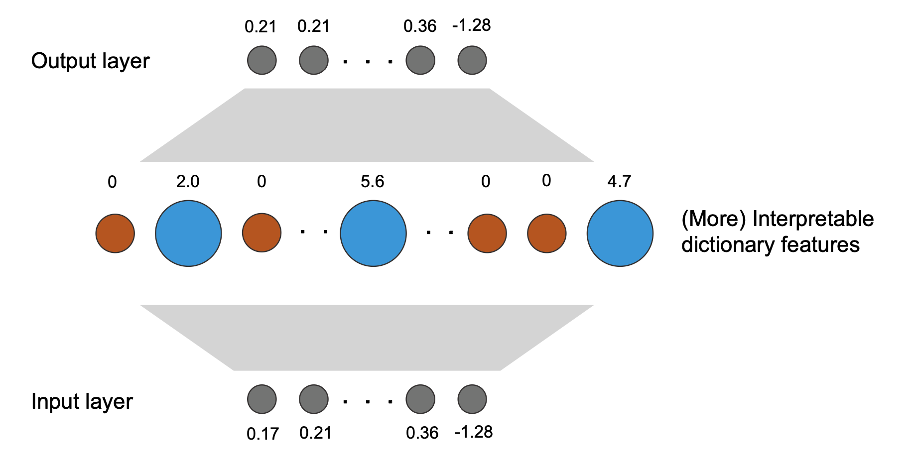
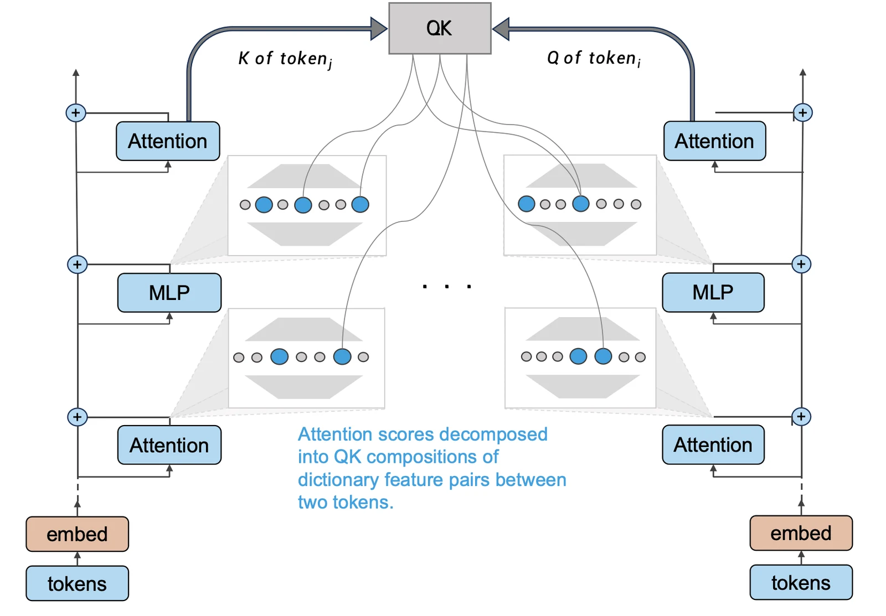
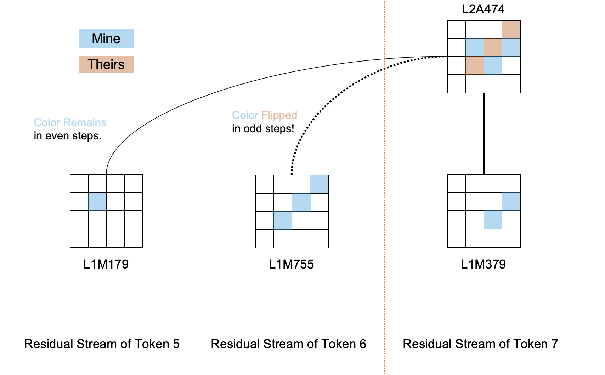

引言
从最广义的角度来看，本文及其后续工作属于机械论可解释性（Mechanistic Interpretability
神经元作为最基本的运算单位，却并不能作为人类解释神经网络的基本组分，这主要是因为单个神经元通常会表示多种语义，因此无法建立神经元激活和人类概念的双射。这种多语义性（Polysemanticity）
可能的重要来源是特征重叠假说（Superposition hypothesis
稀疏字典学习（Sparse Dictionary Learning）是一种基于稀疏自编码器（Sparse
Autoencoder）的无监督特征分解方法，可以从神经网络表征空间中提取可解释、单语义的独立特征，并将任意给定的表征近似分解为若干个（更加单语义的）特征线性加权和。
这类方法为重叠问题带来了重要的进展。
对稀疏字典学习的可解释性研究已具备一定的基础
- 特征与输入的关系：提取出的特征对怎样的输入感兴趣？
- 特征与输出的关系：模型的输出是哪些特征导致的？
- 特征与特征的关系：低级特征如何计算得到高级特征？
本文分为以下5个主要部分：基本设定、字典实验、回路理论、回路实验与总分析。我们首先介绍选用的黑白棋模拟任务，Transformer结构与训练结果；字典学习实验部分包括字典学习的特征提取位置选择与分析结果；回路分析理论中，我们引入一套理论，利用已有的特征提取结果寻找重要的内部回路； 回路分析实验介绍了用这套理论对Transformer应用的结果。
本文的核心结论列举如下：
- 字典特征的可解释性：我们发现字典学习可以无监督地提取出可解释性较强的特征，字典特征的结果相当程度上指示了模型内部各模块的大致作用。
- 注意力模块的信息迁移：我们的理论认为，每个注意力模块输出拆分出的字典特征都可以分解为其它token中的特征对其的贡献，这种贡献大小指示了注意力模块如何将其它token的残差流转化为当前token的信息。
- 注意力模式的形成：我们的理论中，每对token间在给定层的给定注意力头中的注意力分数是可以被分解为两token间特征的贡献之和，该贡献能够揭示注意力产生的原因。
- MLP的信息加工：我们理论上可以解释每个MLP输出的字典特征是如何由其底部特征计算得来，因而可以理解MLP中的巨量参数是如何作用于信息流的。我们对有关MLP理论的扩展提出了一些讨论
- 实验验证：我们的理论在黑白棋模型上的实践具有较乐观的结果。应用以上的理论框架可以针对任意模型给定的行为计算得到一条可解释回路，不同于现有的回路发现方法，我们的框架解释粒度和泛用性均有显著改良。
从黑白棋模型入手
作为后续的实验基座，我们用一个1.2M参数的decoder-only Transformer以自监督预训练的方式学习了一个可编程解决的黑白棋预测任务。本章主要介绍任务描述，模型架构与训练细节。
任务介绍
黑白棋（Othello）是一个棋牌游戏，两玩家轮流在8x8的棋盘上落子，落子规则如下： 以一个空格为中心，若在上下左右及对角线共8个方向上的任意一个方向上，存在一个同色的棋子，且空格与该棋子连线上全都是异色的棋子，则该空格可以落子，并把所有满足前述条件的对方棋子翻转为自己的颜色。 因此这个游戏也被称为翻转棋。
上图展示了一局游戏的进程
正如图中所示，棋盘中有60个空位，因此游戏总共进行60步。将每一步的落子位置记录下来，我们便可以用一个长度为60的序列表示一盘游戏：
通过python代码描述游戏规则，并在每一步从符合规则的下法中采样一个位置落子，我们可以生成数以百万计的数据。我们的设定即对这样的序列进行自回归建模，就如同语言模型建模下一个词的概率，这个任务建模下一步的合法概率
为何选择这个训练任务？
这个任务最初是在这篇ICLR2023 spotlight文章
这个任务的一个巧妙之处在于输入的序列本身提供的信息很少：只有落子顺序，并不包括当前棋盘的状态。 此外，模型不具备任何有关棋盘或规则的知识，其不知道输入的序列是按照两位玩家交替的规律展开的，也不预先知道输入序列与棋盘位置的映射关系，在这样艰难的条件下，其能够完成这一任务便很令人惊奇。即使人类先前知道序列的现实意义，想要得到下一步的合法落子位置也需要通过递归地模拟这一过程并经过细心的考察。而Transformer的计算资源是固定的，它不能显式地完成这种递归过程。 因此，即使不以这个任务作为理解大语言模型的出发点，完全理解其中的原理也能使研究者对Transformer的内部机制有很大启发。
对于本文接下来的字典学习和回路分析理论来说，这个任务是一个较好的入手点：它不需要10-100M级别的模型即可较好地完成任务，这种极小的模型使字典训练简单许多，调试与分析的过程也会更容易。 此外，这是一个更可解释的任务，它很少存在歧义，内在的逻辑较明确。这两个原因帮助我们排除了任务和模型的可能干扰，将研究重心放在可解释性理论本身。对这种选择的更多讨论在黑白棋和语言模型一章有更详细的展开。
模型架构
本文主要关注decoder-only Transformer。架构与配置如下所示：
尽管先前的黑白棋可解释性工作
- 移除Dropout：Dropout天然地为模型引入了冗余，增加了逆向的难度。
- 减少了模型参数：在不损失模型表现与可解释性结论的前提下，我们让模型变得更浅以减少重复的实验部分。
模型训练
训练这个合成任务上的Transformer模型训的设置与朴素的自回归文本建模相同。由于棋盘的开局中已有四个棋子被占据，我们按照阅读顺序将其余空位标号0-59。随机采样的一盘游戏被视作一条序列数据，用于模型自回归建模。
我们采样了1e9条数据并做了去重处理，使用8卡NVIDIA
A100训练了1个epoch。模型loss收敛至~2.02，正确率99.5%。除错误率相比原文
用字典学习提取模型中可解释的特征
本章我们主要介绍以下三个主题：为何用稀疏字典学习解释模型，结合Transformer架构的字典训练思路与实验表现。
稀疏字典学习简介
若Transformer的内部结构对人类理解友好一些，线性的可解释的特征恰好就是神经元，而其激活强度就是这个特征的强度。这样我们只需要分析每个神经元具体在何种情况下被激活以确定其可解释意义，并对特定的输出观察每个神经元的激活值，理解其内部思路就不难了。
这个假设具有较大的局限性
- 任意方向：将对于表征的任意旋转对应地应用于Transformer的参数中，可以得到一族地位平等且行为相同的Transformer。由于Transformer的运算对统一应用于每一个矩阵的旋转操作具有不变性，因此理论上其不必将特征安放于神经元确定的基上。
- 偏好神经元方向：尽管表征空间中，神经元确定的这组基与其它任意的正交基都是地位平等的，但存在一些因素使得Transformer倾向于在这组基确定的方向上“安放”特征。
由于以上的原因，从神经元理解模型内部特征存在不少问题，因此需要一种更一般的方式寻找这些可解释的方向构成的“可解释基”，它们大概率是过完备的。此外，特征重叠的一个重要动力是特征的稀疏性，这也是现实任务常具备的重要性质。
因此利用稀疏字典学习提取特征，相当符合过完备与稀疏这两个重要性质。总体而言，稀疏字典学习的目标是通过一个autoencoder寻找一组过完备的基
其中，
先前的工作已经对字典训练的很多细节做了探索，我们认为训练字典和依据字典发现回路这两个问题在实践上具有极强的相关性，但在理论上是相当正交的。
因此我们直接采用现有的训练设定
Decoder bias
如下图所示，对于给定模块的某处表征，我们可以用字典学习将其（尽可能无损地）分解为若干可解释特征的带权和：

字典学习应从何处提取特征？

Transformer的可解释性架构已经在A Mathematical Framework
of Transformer Circuits
-
分解词表征：词表征是残差流的初始状态，也是引发后续计算的核心。现有的工作用字典学习将词表征分解为可解释特征的加和
例如互联网 = 用户 + 网线 + 社交软件 + ... ，是不错的出发点。然而仅仅如此还不足以完全理解整个模型。 - 分解残差流：对每个Transformer block间或每个Attn/MLP模块间的残差流分解，优点在于直观，可以清晰地捕捉到内部特征的变化。然而这样的方式面临一些问题，若共用同一组基分解残差流的所有位置，则不同位置分布的偏移会对字典学习造成很大影响；而若对每个位置单独训练，会使得分析模块功能时输入和输出位于两组不同的字典基张成的空间，不能直接作差，此时需要寻找两组基中对应的概念才可能便于解释。
-
分解MLP隐层：这种选择基于一个事实：在主流的Pre-norm架构Transformer中，我们不需理解残差流本身，只需要理解每个模块写入残差流的分量并将它们相加即得最终的结果。在这个观察下，我们有两种策略：分解MLP输出或隐层。与前者相比，直接分析MLP隐层会导致需要训练的模型参数量增加4-16倍
(d_mlp / d_model)的平方。 。 此外，由于MLP的降维矩阵MLP_out代表了一个高维空间至低维空间的线性映射，存在可能分解得到的特征处于这个矩阵的零空间内，使得特征失去意义。
基于以上分析，我们认为用字典学习分解以下三个部分可能是有益的：词表征，每个Attn层输出和每个MLP层输出。尽管相比于MLP，针对Attn head的分析已经有相当多的Mech Interp工作，我们认为将其纳入字典学习的统一理论是很有必要的，这种设定对系统和规模化地理解Transformer很有帮助。
用字典学习分解黑白棋模型
作为回顾，我们训练的黑白棋模型总共包含6层，采用Pre-norm，激活函数为gelu。模型隐层d_model=128，注意力头数n_heads=8，MLP隐层d_mlp=512，层数n_layers=6。
模型总共有12个Attn/MLP模块，我们针对每个模块的输出训练一个字典
每层的平均输入表征的2-范数如图所示，图中几乎不可见的误差棒表示了平均的重构误差（由MSE计算的2-范数）。字典几乎可以无损地重构每个模块的输出：
训练完成后，我们有12个字典，从底至上对应第0层的Attn至第五层的MLP，我们用L0A-L5M分别表示第0-5层的Attn层和MLP层。
对于每一个字典，我们统计其中特征的活跃程度
由于这个任务需要建模的世界相比于语言建模的世界简单许多，其隐层维度d_model却与语言模型仅差1-2个数量级，因此在真实的语言模型中重叠现象会更加严重。此外，通过重采样字典激活值等技巧可以让提取出的特征数量更多，可解释意义更详细
上图描述了该模型内部特征的过完备性，模型内部特征另一个的重要性质是稀疏性。下图展现了每个token在每个字典上的平均激活特征数目，在这个模型中，所有层的输出都可以用比隐层维度更少的特征复原：
由于同样的原因，现实语言模型中的特征应当更稀疏
字典特征概览
这个部分主要介绍这个模型中现有工作
在了解我们的字典特征前，首先简介已有的对这个模型的认识，这有助于读者理解我们解释特征的框架。 具体而言，对于一个给定的输入序列，可以唯一确定一个棋盘状态。例如：
这段输入可以唯一确定以下的棋盘状态：
原文
就该问题而言，模型内部应当不存在有关黑色与白色的线性表示，而是将“自己的”和“对方的”两种特征线性表示在隐层空间内。在特征的线性性这一假设下，我们便可以认为后者这种表示方式是更加基本的，而黑白之分的表示在模型中是某种复合特征，对该问题的讨论见基本特征与复合特征一章。 尽管这两种表示方法的表示能力是等价的，以“自己和对方”的视角思考或许有助于模型在不断交错落子的序列中可以始终保持相同的视角：不论当前是奇数步或偶数步，模型仅需以一种方式表示棋盘状态，而非维护两个（可能较独立的）子空间分别用于黑色和白色。
在这一前置发现的基础上，我们的特征解释框架展开如下。
对于字典学习分解出来的特征，我们仅考察那些激活频率大于一定标准的“活跃特征”。
我们对这些活跃的特征做如下记号：对于第X层的Attn/MLP输出分解得到的第Y个特征，我们将其命名为LX{A/M}Y
针对每个特征，我们分别考察它们激活程度最高的样本。下图是一个例子，展示了L0A622被激活的程度最高的64个输入：

直接观察这样的图像比较难以寻找规律，极容易造成幻觉。因此，我们设计了以下的解释接口：
对于给定的字典特征，考察对于1.2M token中top-k使其激活的输入。对这k个输入序列/棋盘状态计算如下统计量：
- 当前玩家：第一行第一列的饼图表示在k个输入中的落子颜色比例。
- 当前落子位置：第一行第二列的热力图表示对应的k步落子在每个格子的落子次数。
- 合法落子位置：第一行第三列的热力图表示在k种棋盘状态中，每个格子的合法落子次数。
- 棋盘状态：第二行第一列的热力图是比较重要的统计量。在k种棋盘状态中，对于每一个格子，若格子与落子颜色同色（“己方棋子”），则状态为1；若异色（“对方棋子”）为-1；格子为空取0。将k个棋盘状态加和即为所求的总棋盘状态。
- 翻转次数：第二行第二列的热力图表示在k次落子中，每个格子上的棋被翻转的次数。
- 空白格子数：第二行第三列的热力图表示在k种棋盘状态中，空格子的数量。
- 棋局长度：第三行的柱状图统计了k个棋局的长度分布。
以上的统计图中，k取2048。每张这样的统计图反映了一个特征的行为。上图中的第一行第二列说明在2048个L0A622最感兴趣的输入中，当前步全部落子于f-1位置，因此我们可以认为这是一个“当前步=f-1”的特征。我们在如何解释字典学习的特征？一章详细讨论了我们解释特征的方法
我们利用这种工具分析字典特征，主要发现了以下几类特征：
- 当前步落子位置特征：在L0A与L0M中存在很多对当前步落子在特定位置响应的特征，例如{L0A53: 当前步落子于g-5}、{L0A80: 当前步落子e-0}、{L0M996: 当前步落子a-4且翻转了上方的棋子}、{L0M195: 当前步落子c-1且翻转了右侧的棋子}、{L0M205: 当前步落子c-1且翻转了右上方的棋子}。
- 表示棋盘状态的特征：在L1A至L4M中存在很多描述当前棋盘状态的特征，例如{L1A626: f-1是对方的棋子}、{L1M158: e-2是自己的棋子}
- 表示空格子的特征：在L5A中存在很多描述棋盘格子为空的特征，例如{L5A336: c-3是空的}。
- 表示某处为合法的特征：在L5M中存在很多描述某个位置为合法落子位置的特征，例如{L5M733: b-3是合法的}。
相比于之前的工作，我们产生了一些新的发现：
-
几乎所有表示格子为空的特征都出现在L5A中，这和Neel Nanda等基于probing的工作
得到的结论是很不同的。他们发现棋盘格是否为空在L0A之后就可以被探测出来，我们认为这些特征直到L5A才显式地被计算出来。 - 我们在L0M中发现了一种“落子于某处且翻转了某个固定方向棋子”的特征，这与用probe发现的“某处棋子在当前步被翻转”的特征也有不同。
以上两处不同之处其实并不矛盾。我们认为探测出的结果是一种复合特征。
总体而言，我们发现相当多的特征都可以解释，尽管存在无法直接理解的特征，这些特征的激活值往往较小。
从特征发现回路：我们的回路发现理论
在机械论可解释性的宏观视角来看，即使我们对字典学习的认识和工程经验不断精进，能够更好地理解特征，我们仍然需要一种可规模化的方法回答一个重要问题：不同的特征是如何被激活或抑制的，即模型的内部回路是如何由底层表征计算得到高层表征的？
我们将Transformer decoder分为三个主要部分：QK回路，OV回路和MLP。对这种数学模型的分析在A Mathematical Framework of Transformer
Circuits
-
注意力模块迁移了何种信息：每个注意力头在确定了注意力强度后，将表征从一个token处乘上两个权重矩阵
W_{V}, W_{O} 后迁移至另一个。这个行为将源token的哪些特征转化为目标token的哪些特征？ - 注意力强度是如何形成的：注意力头通过计算对两个token的QK进行内积，得到两token间的注意力分数，并通过Softmax函数归一化为注意力强度。对于给定两token间的注意力分数，我们希望理解哪些特征引起了这种注意。
- MLP如何加工特征：MLP的输出为残差流引入了新的信息，这些信息是由哪些特征计算得到的？
为了方便理解，我们按照以下顺序介绍我们的理论框架：残差流的一个重要数学性质，OV回路的可解释性，QK回路的可解释性与MLP的可解释性。
残差流中的重要性质

如上图所示，在残差流中，任何模块的输入
处理LayerNorm
在主流的Transformer架构中，LayerNorm通常在每个模块从残差流读取一份复制后，对其执行LayerNorm操作并用于后续计算，即Pre-norm。尽管每个模块的输入可以线性分解为底部所有模块的输出之和，LayerNorm本身并非一个线性操作，这使得我们无法将相同的操作应用于每个线性分量上，解决这个问题这对后文的分析有重要影响。
上式用一个伪代码描述了LayerNorm的计算过程，其中计算标准差这一步对输入x不是线性的。对此，我们将x的标准差视作常数而非x的函数，于是LayerNorm在不影响计算结果的前提下转化为x的线性函数，我们就可以对x的任意线性分解分别进行这种新的LayerNorm操作以估计每个分量对结果的影响。
特别地，当我们关注的LayerNorm是模型在lm_head之前的FinalLayerNorm时，这样的技术就可以用于分析每个模块对输出logit的影响，这种技术被称为直接输出归因(Direct Logit
Attribution)，这种技术在相当多的Mech Interp文章中有应用
OV回路分析理论

Transformer内部的每个注意力头需要通过如下过程将token
其中上标
由于多头注意力的独立可加性，注意力模块在token
因此，某个注意力模块在token
再进一步，我们又可以将其他模块的输出近似为字典学习的分解结果：
其中
若在token
采用上一章对LayerNorm的处理，整个式子对任意的底部特征激活
QK回路分析理论

对于QK回路的理解与记号可以很大程度借鉴上一部分。Transformer内部的每个注意力头通过如下过程决定token
其中
在下文中，我们将计算Softmax前的变量
具体而言，由于每个token在给定注意力模块的输入可以近似地用其底部的所有特征表示，这个过程与上一部分讨论的相同，即：
在可以用线性操作近似LayerNorm的前提下，我们发现
为便于表示，在上式中我们将两维的线性展开
于是对任意给定的
MLP分析理论

MLP模块占据了Transformer模型中的逾半数参数，然而领域内对MLP的可解释性研究相比于注意力模块显著较少。这可能是因为MLP本身形式较简单，而基于神经元的研究又存在一定的局限。在字典学习的框架下，我们似乎可以理解更多有关MLP的内部特征，于是我们提出一个问题：这些特征是如何通过MLP计算得到的？
这部分的记号相比于之前两个部分简单，这是因为MLP不具备多头注意力的可分解性，同时也不涉及token间交互。因此我们的问题可以这样描述：
若通过字典学习将LXM模块的输入分解为字典特征的加权和，则LXM的输出可表示如下：
若同样地用处理LayerNorm的策略将其近似为线性函数
其中
若把MLP看做任意的非线性函数，回答这个问题将是非常困难的。好在MLP内部仍然具有一定的归纳偏置可供我们分析，在常规设置的单层MLP中，经过激活函数的神经元表示对最终结果的贡献是线性的，而每个输入对神经元的贡献是非线性的。具体而言，某个神经元
MLP隐层的激活函数Act_fn带来的非线性性质是影响可解释性的关键。我们发现流行的激活函数设置总是满足某种自门控的形式
基于这些观察，我们定义组成
于是MLP的某一输出特征可表示为底部所有特征的近似直接贡献之和：
至此我们终于将MLP的输出特征与输入特征建立了联系，并且可以通过近似直接贡献考察每个输出特征的激活来源。
用近似直接贡献评估每个特征对输出的影响，具有以下性质：
-
线性性：通过固定非线性部分为常数，我们将非线性的MLP函数又转化为对每个特征的线性函数。因此有
\textbf{Out} = \sum_m \textbf{ADC}(c_m \mathbf{d}_m) ，即MLP的输出等于每个输入特征的近似直接贡献之和。 - 误差的上界：近似直接贡献不能捕捉到底部特征对MLP输出激活的全部贡献，但这个误差存在一给定的上界。
由于MLP中的隐层神经元对MLP输出的贡献是线性的，因此这些神经元对任意MLP输出激活的贡献也是线性的，这是因为MLP的输出操作和字典encoder都是线性映射。
于是我们若考虑底部特征
然而近似直接贡献不能捕捉
回路分析理论：总结
我们在本章将Transformer分为QK，OV和MLP三大模块，针对各自的特性讨论了一个核心问题：若字典学习可以较好地分解表征，我们如何理解Transformer是如何根据底层特征计算得到高层特征的？我们认为对OV回路的理解是最完善的；对QK回路的分析有可能无法捕捉到有关整个序列的特征，但仍足以理解许多行为；对MLP的分析理论仍需要更多研究以确保其可以可信地泛化与规模化到所有情况。
理解黑白棋模型中的回路
至此，我们已经准备好了我们的理论框架，现用它来分析我们的黑白棋模型。本章的主要篇幅是对模型各种具体行为的样例分析，应用字典分解结果和回路分析理论，我们似乎能理解这个模型的大多数行为。最终我们给出一个较宏观的回路发现结果。
我们对本章的每个主题选择1-2个棋盘状态对模型的行为具体分析，展示的所有样例均是随机选择的。
用Direct Logit Attribution理解模型的输出与特征激活的关系
通过应用Direct Logit Attribution，很多的Mech Interp工作将特定的logit归因到某个MLP或注意力头上，以帮助分析每个头的作用。我们在这里提出一个更详细的问题：若字典学习可以将每个模块的输出分解为可解释特征之和，哪些特征对给定的logit有较大贡献？
我们随机采样一组数据，并从中随机采样一步，对应的棋盘状态如下：
模型给出的预测结果如下：
模型成功预测了合法的位置，我们可以分析任意一个logit，比如棋盘上的33号位置，其logit约8.29。我们对每个特征计算Direct Logit Attribution，结果如下：
在上图中，我们移除了贡献绝对值小于0.1的特征。我们发现L5M499贡献相当突出，这个特征的行为描述如下：
我们重点关注第一行第三列描述合法位置的统计量，这张热力图代表在L5M499被激活最强的2048个输入中，有大部分描述的是“d-1,e-1,f-1”是合法的，而这恰好符合上述的棋盘状态。再结合我们尝试的其他例子，我们得到一个结论：棋盘的多数logit是由少数几个L5M特征主要激活的，这种影响具有直接的因果性，且这些特征的响应较专一。
用近似直接贡献理解MLP特征的激活

上一部分我们已经将模型输出与最高层的MLP特征建立了联系，接下来一个较为自然的问题就是，每个MLP特征是如何计算出来的？
我们再次随机选取一个棋盘状态，如下所示：
在上图对应的棋盘状态中，我们选取L2M中激活最高的特征L2M845，其激活值是1.4135。这个特征的行为比较好理解，指的是模型在b-4或b-5落子并翻转了c-4处的棋子：
我们列出了近似直接贡献绝对值小于0.05的特征：
我们发现有四个重要的贡献者：L0A837, L1M280, embedding和L1M49。它们对应的特征简要描述如下：
- L0A837：当前步落子于b-4；
-
L1M280：当前步落子于c-4
此处与当前步不符。 ，且d-4, e-4是己方棋子； - embedding：当前步落子于b-4；
- L1M49：当前步落子于b-4，且b-4至e-4大概率都是己方的棋子。
这四个特征的共同之处在于：它们均描述了列4的翻转情况，从人类可理解的角度来看，这些特征均是{L2M845：c-4被翻转}的充分条件，我们有一定的信心相信这揭示了模型从底部特征得出高级特征的一种模式。
理解OV回路的信息迁移

我们仍然随机采样一个棋盘状态：
我们发现L2A474重点描述了以c-2为中心的某种特定棋盘状态，与当前的棋盘状态有较好的对应，在当前棋盘状态的激活值是0.70：
我们利用OV回路的分析理论，将该所有token位于L2A之下的所有特征对该特征的贡献陈列如下：
上图中省略了贡献绝对值小于0.03的特征，其中PX表示来自第X个token残差流中的信息（该例中X取0-7）。我们发现贡献最大的3个特征均与该棋盘状态相关：
- P7L1M379：与P7L2A474位于同一个token的残差流中，描述的是c-3与d-4为己方棋子，这可能直接影响了P7L2A474对这两个位置的响应。
- P6L1M755：位于P7L2A474的前一个token残差流中，由于对应的落子颜色相反，两者对棋盘状态上己方和对方的概念是相反的。由于L1M755描述的是c-2, d-3, e-4是己方的棋子，其对P7L2A474的贡献在于“由于上一步中c-2是己方的棋子，下一步中将变为对方的棋子。”
- P5L1M179：位于P7L2A474的前2个token残差流中，这对应了两步前的棋盘状态。L1M179描述的是d-2, d-3, d-4是己方的棋子，其对P7L2A474的贡献在于“由于2步前d-2是己方的棋子，因此其仍应当是己方的棋子。”
除此之外，我们发现P6L0A629对P7L2A474的激活有很强的副作用，我们发现这也有很强的可解释意义：L0A629主要描述c-3是己方棋子，而由于P6L0A629位于P7L2A474的前一个token，这与P7L2A474描述的c-3是己方棋子是相悖的，这也是因为相隔奇数步的残差流中对己方和对方的认知是相反的。 这种矛盾主要是因为P7的落子恰好翻转了c-3位置的棋子，而上一步的残差流并不包含未来的信息。我们猜想这种模型中存在某种非常微妙的平衡，故由于棋子翻转从过去的token中带来的负面影响会被描述棋子翻转的特征带来的正面影响消除甚至覆盖，从而在棋局的不断进行中始终保持尽可能正确的棋盘状态信息。
对读者而言，这部分的理解应当是相当困难的，因为黑白棋模型的特殊理解方式“己方vs对方”与繁杂的棋盘记号，对表述和理解都带来很大的困难。简而言之，我们发现OV回路迁移的信息都具有很强的可解释意义，某个残差流中的Attn从其它残差流带来的可解释特征能够很大程度上转化为当前残差流的可解释特征，这使我们对Transformer内部神奇的信息流动机制一再感到惊奇。同时我们也更加相信理解模型的行为并非一个极其复杂的问题，经过细心的观察，我们有很大机会理解这些复杂的信息流动。
理解注意力强度的形成

注意力强度是可解释性研究中最容易入手的点之一，通过注意力分布的热力图，我们很容易认识到每个token对其它的token倾注了多少注意力。在本章节中，我们对该模型中最广泛的一类注意力模式做分析，它们形如以下的交错式注意结构：
我们猜测，这种注意力模式的形成是为了分别从属于己方/对方落子对应的残差流中迁移信息，若某token与当前token相隔偶数步，那么过去的残差流中描述“属于自己的棋子”的特征应当能够增强当前步的相应特征，我们发现这种机制多是靠位置编码实现的。这里我们举一个例子， 在上图的注意力模式图中，最后一个token对对方落子的token均赋予了很强的注意力。
应用我们的回路分析理论，我们调查上图中token 14对token 13的注意力是哪些特征对引起的。我们发现其Softmax前的注意力分数为5.80，线性分解后的贡献如图所示：
我们先前发现模型自发学习的位置编码显著包含了当前落子颜色的信息，且模型底层有若干特征表示了类似的概念。我们发现，图中贡献最大的特征对中许多都包含位置编码，我们还发现其余的若干重要特征（例如P13L0M1015与P14L0A195）均是与当前落子颜色强相关的特征。 这说明我们的回路发现理论可以识别与位置编码相关的特征，且发现这些特征直接贡献了前文所述的注意力模式。
总结
这部分内容是本文的核心，我们通过实验更加确信了我们的回路发现理论可以在前所未有的粒度（即字典学习特征）上发现模型的回路，我们能够理解相当一部分的MLP特征与Attn特征是如何计算得到的，且实验结果和人类理解是相符的。 在我们的理论框架下，再加之细心的实验与总结，我们可以比较深入地理解Othello模型大致的工作流程：
- 模型底层包含了很多局部信息，在底层模块与embedding的协同作用下，模型能够了解当前落子对棋局的影响，并理解哪些棋子在该步中被翻转。
- 模型（主要在中层）从过去token的OV回路迁移棋盘状态，以尽量避免重复计算。再加之上一步计算出来的翻转状态，模型便可以以相当高的准确率理解当前步的棋盘状态。
- 模型（主要在高层）的MLP中根据棋盘状态计算合法的位置，并结合高层Attn对棋盘是否为空的信息直接向logit输出决策结果。
本章的发现本身便足以使我们对Transformer内部的结构产生相当程度的认识，例如OV回路分析中，我们发现了特征间的可解释关系和贡献/抑制关系具有很强的正相关性，以及MLP中高层抽象特征的形成通过近似直接贡献常能按人类可理解的方式分解为底层基本特征。 这些结果让我们对理解语言模型产生了很多信心，同时我们也从中获取了许多关于Transformer模型的知识。我们在这章中仅展示了一些有代表性的结果，这套理论可以发现的现象远不止于此。有兴趣的读者可以在github repo下载并运行交互式的开源实现，自行复现或探索这个模型内部的回路。
总讨论
黑白棋和语言模型
我们的最终目标是能够逆向的Transformer语言模型，在黑白棋模型中仅做概念验证。黑白棋任务是一个不错的语言模型简易替代品，因为它的复杂度很难仅凭记忆完成，这套“黑白棋语言”的内部世界较丰富，且存在不少抽象的概念。 这种具有一定复杂性的任务使其有作为初步尝试的价值，相较下算术任务等与语言模型相差太大，可能无法得出可迁移的结论。 同时其又不至于过分复杂以增加训练字典或解释的难度，仅60个token的词表大小，与无重复输入的性质均一定程度上使我们的可解释更加明确，排除了很多易混淆的概念。
我们总结了两点黑白棋与语言模型的区别，我们认为这些区别在字典学习的框架下是值得注意的。
-
字典特征远比语言模型稠密：我们发现模型中，尤其是在中层，有非常多的特征用于描述棋盘状态。随着棋局进行，棋盘状态越复杂，特征越常被激活。这和现有的对语言模型的观察是一致的
。 正如上图中展示的，分解高层的MLP的L0-norm有时会几乎接近d_model 128，这说明字典分解几乎不怎么稀疏。相比于其它工作在语言模型的尝试，例如Anthropic分解的单层语言模型一般可以将512维的表征分解为10-20个特征的稀疏激活，我们字典模型的稀疏程度是远不及的。 我们将其大部分归结于黑白棋世界远比语言世界简单且特征稠密这一事实，同时我们也认为本文实现的字典训练并非最佳实践。 - 特征重叠不够明显：同样由于黑白棋世界简单这一事实，我们认为这个模型中的特征重叠并不明显，即模型的d_model=128可能表示了少于128个特征。 尽管上图中显示每层输出的活跃字典特征都大于d_model，我们发现黑白棋模型中的特征相比于语言模型，很可能存在“相反特征对”的现象，例如“b-3是己方棋子”和“b-3是对方棋子”可看做两个独立的0-1特征， 但若从“b-3的棋盘状态”视角来看，这两个特征可以被解读为同一个特征在某方向上的正负投影。即若将特征的定义从表征空间中的方向扩展到及其反向，字典特征须大于2倍的d_model才能严格说明重叠的存在。 尽管这个隐患可能存在，我们认为其至多削弱使用字典学习理解这个模型的动机，对我们的理论和实验结果不造成实质影响。
重叠假说和我们的字典学习流程均假设表征空间可以被分解为若干个可解释特征的加和。这些特征在空间中以单位向量的形式出现，其激活强度代表了这种特征出现的强弱。 这些特征的激活强度均是非负值，实现上，我们用字典学习隐层的ReLU函数将所有小于0的特征激活重新规约为0即出于这个原因。
在这一假设下，方向相反的特征一般具有较强的负相关性，而非一个特征的正激活和负激活。这两种情况其实并非完全互斥的，例如在下图所示的特征重叠结构中，绿蓝两特征为两个无关概念，因稀疏性被表示于相反方向。而模型在左下-右上方向上安放了两个完全互斥的特征，我们可以也等价地理解为这是一个特征的正激活与负激活。不论按何种方式理解，这个空间一定发生了特征重叠。
总体而言，我们认为这个任务上的结果有一定借鉴意义，其与真实语言模型的差异不会影响我们的基本结论，但仍是重要的细节。
如何解释字典学习的特征？
假设我们提取出字典学习的特征，并能够对每个特征获取激活较大的若干输入，我们该如何解释这种输入？从长远来看，我们必然需要某种自动化的方法，例如用大语言模型解释语言特征
为了评估解释结果，我们在少量的特征中进行了验证，流程与现有的自动化解释思路类似。我们以一个例子说明：
- 我们首先观测某个特征重要的统计量，如下图所示，我们提出假说：L5A172指示的是f-4位置为空；
- 随机采样N个输入，根据游戏规则判断这些输入是否符合假说对应的模式，并归为两类；
- 查看这两类棋局对给定特征的激活差异：
通过可视化特征激活可以获取对激活专一性与敏感性的直观理解，但定量化的评估指标仍是必要的，我们认为这也是未来重要的研究方向。
字典学习与Probing
字典学习与Probing
另一个重要的区别在于，相比于基于probing的方法需要首先提出特征的定义或分类标签，字典学习可以无监督地提取特征。但监督信号仍可能是需要的，这是因为解释这些特征时仍可能需要许多先验知识。 本文所示的任务便是个极好的例子。在原文中作者们采用黑色与白色做线性probing取得的效果并不理想，后续的工作中从“己方”与“对方”的角度极大地提升了probing的表现，这说明已有的对字典学习内部特征族的理解很可能帮我们解释一大批原本并不清晰的特征。
我们认为可能最重要的问题是字典学习特征的基本性，我们在下章中单独讨论。
基本特征与复合特征
先前对OthelloGPT的研究中，有研究者用probe的方法发现模型中存在Flipped features，即指示某一棋盘位置是否在当前步被翻转，而在我们的字典学习结果中，我们没有直接发现这样的特征。 但与之类似的，我们识别到一系列特征，指示当前位置落子于某处且翻转了某个固定方向的例子。例如，在L0M中存在一对特征，均对当前步落子于c-2处，然而仅当该步落子翻转了右侧的棋子时，L0M195被激活；该步落子翻转右上方棋子时，L0M205才被激活。 这两个特征在表征空间中具有-0.13的余弦相似度，说明两者之间具有相当的独立性。
因此我们猜测，字典学习得到的特征集合可能是更加“基本”的特征。在上例中，probing得到的Flipped features可能是该棋盘位置被来自其周围8个方向对应翻转特征的组合，因此这是一个由基本特征线性组合而成的复合特征。 这是一个比较模糊的话题。我们认为“基本”是一种相对的概念，Anthropic的字典学习研究中表明，当字典隐层不断被扩大，得到的特征的描述粒度不断细分，而大字典中的特征子集可以构成一个“特征簇”，在小字典中以单个或更少数量的子集展现。 我们在这一观察的基础上认为，字典越大，分解得到的特征越基本，这种基本性是由于字典训练过程中为了用有限的神经元数量形成稀疏分解为动力的，而probing得到的特征方向则不具备任何有关基本性的先验。这也是我们得出上述结论的依据。
类似地，我们猜想现实语言模型中指示情感或事实性的特征
基本特征与复合特征
回路与随机性
在QK，OV和MLP三种回路中，我们均可以刻画某种贡献，在QK回路中这种贡献是两条残差流中任意特征对的双线性结果，在OV回路中是来自其它token残差流的特征经过OV回路的结果，在MLP中是近似直接贡献。 然而，由于特征重叠的原因，独立的特征对无法被表示在正交的方向上，因此它们之间的贡献应当满足某种随机分布。我们需要明确任意两个特征间的贡献是来源于随机性，还是Transformer学习到的回路使然。 例如在前文所述的近似直接贡献图中，我们无法确定应该以何处作为分界线，以明确这之前的强贡献特征是模型实现有意为之，而这之后只是特征重叠带来的微量噪声：
现实的情况更可能是不存在这一条分界线。特征重叠的重要动力是减少训练损失，因此将两个较弱正相关的特征建立某种微弱的正向重叠以求期望上的最小信息干扰，故我们观测到的贡献某种程度上反映了相关性的强弱关系。
这模糊了我们对回路理解的定义。结合现有的回路研究，我们更加相信模型内部的多数行为由多个或正或负的回路组合而成，正如同模型预测的logit是一种混合策略，其内部信息的流动也是混合而成的。 在这一猜想下，我们或许只能理解最主要的那一部分，并随时准备迎接可能的可解释性幻觉。但仅是如此，我们认为已经足够我们非常深入地了解Transformer内部的工作原理。
此外，由于真实的语言模型中特征更稀疏，隐层却更宽，且所有特征张成的语义集合（即世界）更广阔，我们猜测在语言模型中来自OV回路的信息流动会更明确。
本文理论框架的可规模化
最终，我们希望用类似的分析，加以许多工程上的改进，将本文涉及的方法应用于较大的语言模型。尽管本文采用的模型较小，任务也并非语言建模，但由于字典学习部分和回路分析部分均与模型大小或任务无关，我们相信现有的结果已经足以支撑语言模型上的直接应用。
一个重要的待解决问题是语言模型上的字典训练。在最基础的稀疏自编码器结构上，已有很多工作提出了算法上的改进与实践经验，更优的算法设计可以帮助我们找到计算资源、重建误差和特征可解释性三者的帕累托最优边界。这一问题在所有字典学习工作都至关重要。
例如稀疏约束优化的最终目标应是字典隐层的L0-norm，广泛采用的L1-norm有凸性等很好的性质，但是否存在更好的稀疏约束损失是一个可能的重要问题。
字典优化上，规整Adam动量
对字典特征的解释已在前文讨论过，在语言模型中，用强大的语言模型自动解释特征至少可以为每个特征赋予一个有相当可信度的初值。此外，搭建交互式的可解释性界面很可能是人类微调或分析的核心接口。 我们相信这些工程问题有可能在不断优化的过程中整合，发展成较成熟的可解释性范式。
我们的回路分析理论本身不受规模化的影响，但需要对transformer的架构发展做出一定调整。
对QK回路的分析与流行的位置编码方式是完全兼容的；流行的Llama架构
回路分析的实践中，交互式的接口会对回路发现带来极大便捷。这些工程问题都可能转化为可解释性可规模化过程中的副产物。
总结
我们提出了一种非常一般性的可解释性理论，在字典学习可以提取每个MLP与注意力模块中尽可能多可解释特征的假设下，我们进一步提出了一种回路发现理论框架，可以将计算图中的所有特征联系起来，形成一张极其密布的连接关系图。 尽管这张理想的图中涉及非常多的连接，我们认为特征的稀疏性与特征间相当程度上的独立性对理解这些连接很有帮助，使得我们可以在人类可接受的复杂度下理解每个特征与其底部所有特征的联系。其中稀疏性保证了每个输入只激活少数的特征，且我们猜想每个特征的激活来源只有其底部的少数特征而非所有特征共同作用。
由于我们理论的一般性，我们的视野涉及了非常多先前Mech Interp的研究方式，我们猜想通过训练线性probe可以发现的特征也可以通过字典学习发现，且Activation Patching等方法在这个框架中也可以自然地应用。如果这个方法能够被应用在至少GPT2-small级别的语言模型中，我们相信我们可以在这个框架下“重新发现”许多已有的结论，包括注意力头（组）的局部作用、MLP中的知识与发现种类繁多的全局回路，并帮助我们发现新的现象。 可以用两种“一般性”来总结这套理论的重要意义。 首先是特征一般性，我们不需要有关模型内部信息的任何先验知识，仅需无监督地训练字典便可分解出许多可解释的特征； 其次是回路一般性，我们的回路分析弱化了对回路结构的先验认识，我们只需定位到与之相关的特征，并从之出发（或者更简单地，从输出出发），将特征的激活分解为其（或其它token的）底部特征贡献。这个过程可以很轻松地发现局部的回路，递归地应用这个过程有望帮助我们发现许多组合回路。
但正因为其一般性，想要在一篇这样的散文中讨论所有的细节是很不现实的，仅是处在核心的字典学习也需要许多篇幅将其中许多重要的细节阐述清楚。 同时，正因为这种一般性，我们能在此展示的结论只是模型的众多行为中非常小的一部分。若将我们展示出的部分视作“特征簇”与“回路簇”中的代表，我们可以稍微自信一些地说我们可能理解了部分模型内部的工作原理，但仍没有解释Othello-GPT的所有现象，例如终局回路。 尽管我们相信这种分析已经将很多有关Transformer的奥秘分解出来，如何系统化地为人类理解仍是一个问题。理解特定的logit或特定的特征的激活来源具有相当细的粒度，也正因此，这种理解就需要重复天文数字般的次数才能完全理解模型的每一个特征与行为。
此外，我们认为我们在字典学习与回路发现理论上均处在初级阶段，我们无法声称字典学习完全提取了所有的特征，或声称每一个特征都是单语义的或可解释的，也无法声称发现的每一个特征激活都能充分或无误地被分解为底层的来源。字典学习与回路发现理论的任何优化都可能为我们展开新的可解释性可能。 但不论我们对其中的哪些细节存在担忧，我们认为这套理论为后续的，尤其是基于字典学习的，可解释性研究打下了不错的基础，让我们对完全理解Transformer内部的终极目标又多了一些希望。
这篇工作的另一个重要意义是作为Open-MOSS Interpretability组的第一篇post，明确了我们对可解释性研究的一些思考。我们希望重点研究Mechanistic Interpretability的系统化发展，找到一种人类理解和高维表征空间的连接，并将数以亿计的模型参数抽丝剥茧以理解其智能。字典学习是目前我们比较寄予厚望的基础，我们也随时准备拥抱新的可能性。